ProxyLab — Kurulum & Cihaz Bağlama Rehberi
iPhone, Android ve simülatörden gelen HTTPS trafiğini yakalamak, değiştirmek ve tekrar oynatmak için adım adım kurulum. (Sürüm v1.1.0)
Bu rehber; iOS Simulator, Android emülatör, fiziksel iPhone ve Android cihazların ProxyLab'e nasıl bağlanacağını ve HTTPS trafiğinin görünmesi için gereken sertifika (CA) kurulumunu kapsar.
Bu satırlar hakkında — “📷 EKRAN GÖRÜNTÜSÜ: …” ile başlayan kutuların yerine, kutuda tarif edilen ekran görüntüsünü ekleyin. Doküman Türkçe; uygulama görselleri İngilizce arayüzdendir.
İçindekiler
Genel bakış & temel kavramlar
Adım 0 — CA sertifikasını bu Mac'e kurma (tüm akışların ön koşulu)
iOS Simulator bağlama
iPhone — fiziksel cihaz (Wi-Fi)
Android — emülatör (adb)
Android — fiziksel cihaz (Wi-Fi)
System Proxy & Kapsam (Focus) — önemli uyarılar
See — sağ tıklama menüsü (kural · breakpoint · Remote'a gönder)
Remote — İstek oluşturucu (request builder)
Sorun giderme
Klavye kısayolları
1Genel bakış & temel kavramlar
ProxyLab, cihazınız ile internet arasında bir MITM (ortadaki adam) proxy olarak çalışır: 8888 portunda dinler, cihazın HTTPS trafiğini çözer ve ana ekranda listeler.
İnteraktif ProxyLab — uygulamayı buradan deneyin
Tam ekran aç ↗
↑ Bu, gerçek uygulamanın See ekranının çalışan bir taklididir. 🎯 Rehberli Tur ile adım adım gezin, ▶ Otomatik Tur ile kendiliğinden oynayan demoyu izleyin veya Serbest gez ile satırlara tıklayıp detayları kendiniz inceleyin.
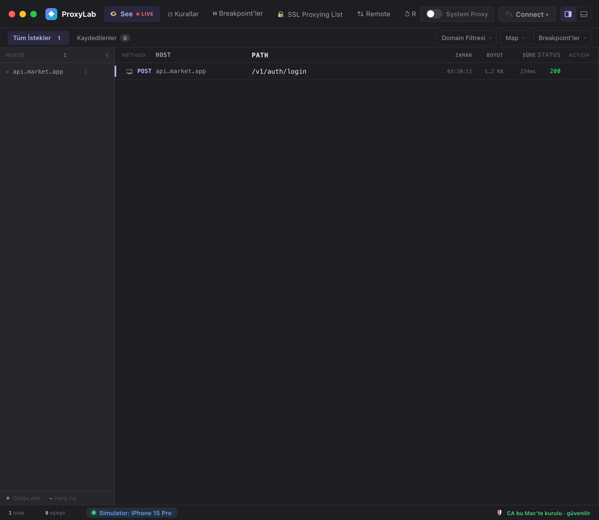
ProxyLab ana ekranı — See sekmesi (henüz trafik yok)
Bilmeniz gereken üç kavram
Kavram
Ne işe yarar
Capture (Live)
Trafiğin anlık listelenmesi. Sağ üstteki “Live” göstergesi yeşilse trafik yakalanır.
System Proxy
Bu Mac'in tüm trafiğini (Safari, simülatör, native app) ProxyLab'e yönlendirir. Simülatör için gereklidir. Sadece bu Mac'i incelerken AÇIN (Bölüm 7).
Kapsam (Scope/Focus)
Yalnız seçtiğiniz domainleri yakala, gerisini doğrudan geçir. Pinning yapan uygulamaların kırılmasını ve listenin gürültüyle dolmasını önler.
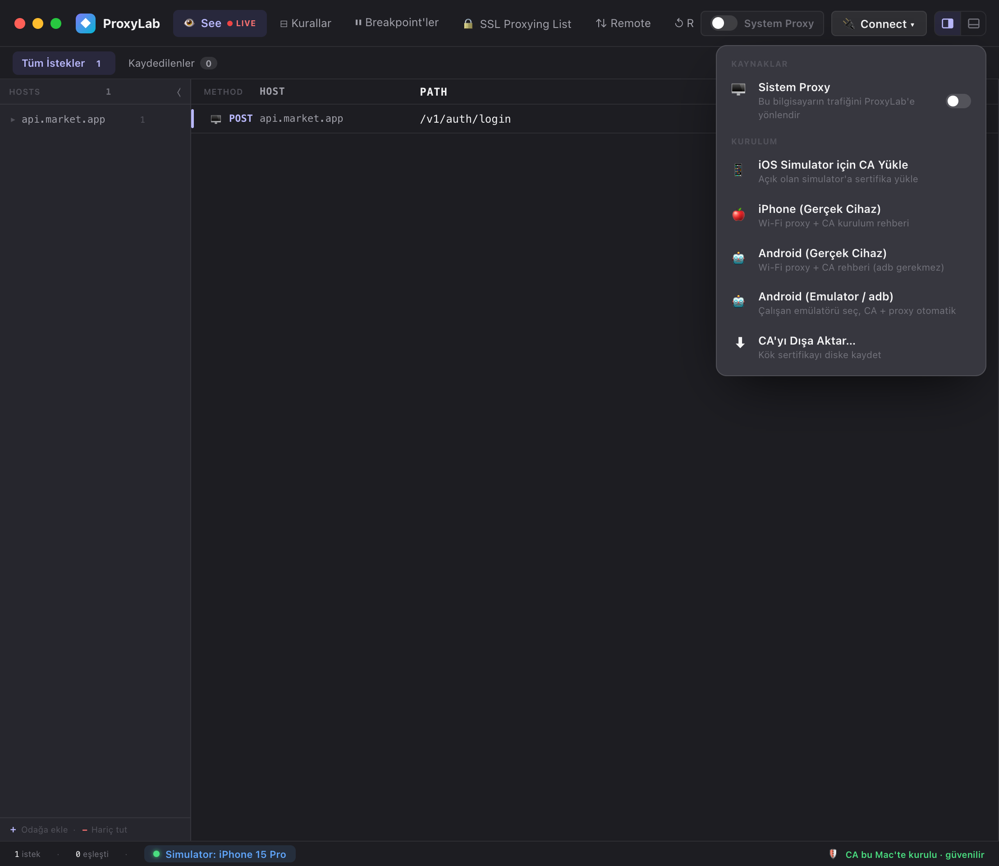
Sağ üstte Connect menüsü açık
2Adım 0 — CA sertifikasını bu Mac'e kurma
HTTPS trafiğinin çözülebilmesi için ProxyLab'in kök sertifikasına (CA) hem bu Mac'in hem de hedef cihazın güvenmesi gerekir. Önce Mac:
Üst menüden Proxy → CA'yı Bu Bilgisayara Yükle (veya ana ekrandaki ilgili buton).
macOS bir parola diyalogu açar (güven ayarlarını değiştirmek için). Parolanızı girin.
Ana ekranın altında “✓ CA installed on this Mac” yeşil yazısını görün.
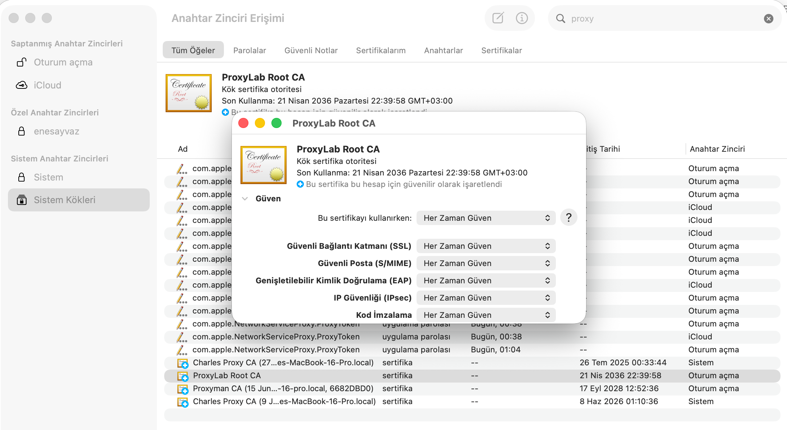
macOS Anahtar Zinciri — ProxyLab Root CA için “Her Zaman Güven”
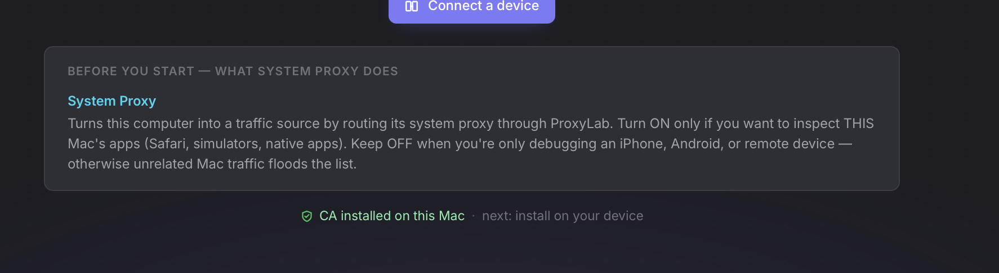
ProxyLab: “CA installed on this Mac” — sertifika bu Mac'e kuruldu
Not — Bu adım Mac'in (ve Mac üstündeki Safari/simülatör'ün) güvenini sağlar. Fiziksel cihazlar için sertifika ayrıca cihaza da kurulur (aşağıdaki bölümler).
3iOS Simulator bağlama
En hızlı yakalama yöntemi. Simülatör, Mac'in sistem proxy'sini kullanır.
Xcode ile bir iOS Simulator başlatın (Booted durumda olmalı).
ProxyLab'de sağ üst Connect → “Install CA for iOS Simulator”.
ProxyLab CA'yı çalışan simülatöre kurar ve simülatörü yeniden başlatır (güven önbelleği için).
Üst araç çubuğundan System Proxy'yi AÇIN (simülatör trafiği Mac proxy'sinden geçsin).
Simülatörde bir uygulama açın; istekler ProxyLab listesine düşmeye başlar.
Connect → “iOS Simulator için CA Yükle”
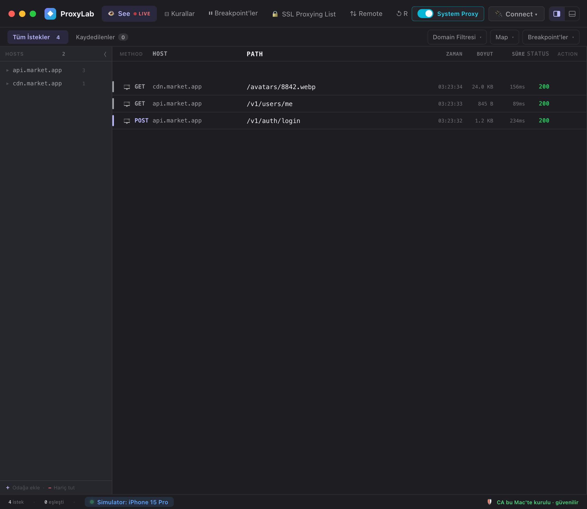
Araç çubuğunda System Proxy açık
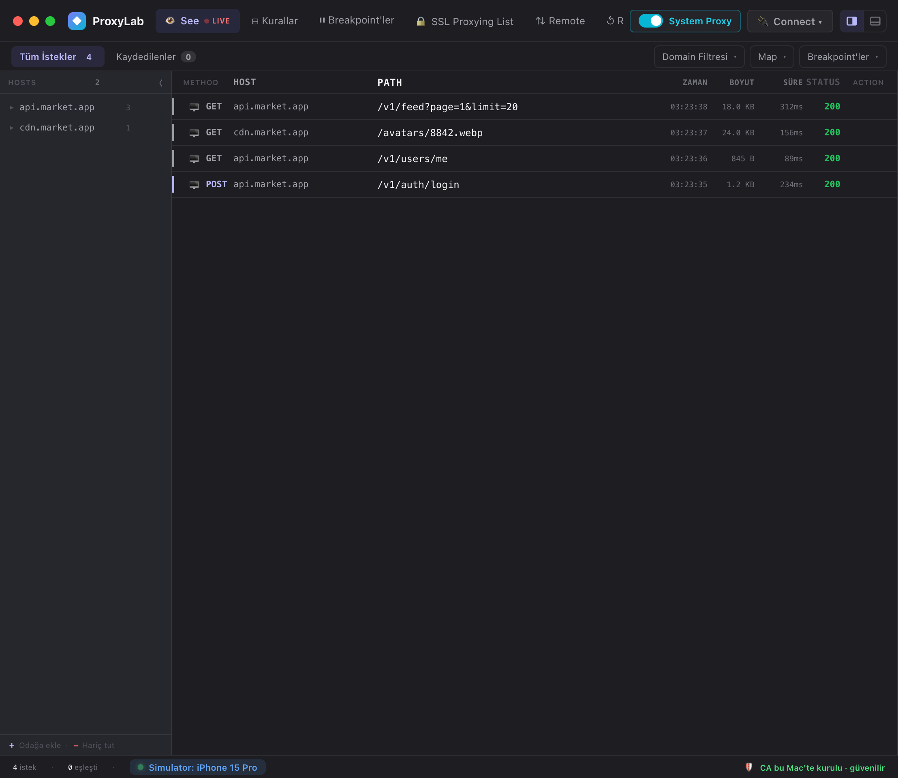
See sekmesinde yakalanan trafik
Xcode 26 uyarısı — Bazı Xcode 26 sürümlerinde simctl add-root-cert sessizce çalışmayabilir; CA simülatöre kurulmaz ve HTTPS handshake patlar (istek listede görünmez). Bu durumda CA'yı simülatörün TrustStore'una elle yazmak gerekir. Belirti: HTTPS isteklerinin hiç düşmemesi.
4iPhone — fiziksel cihaz (Wi-Fi)
Cihaz ile Mac aynı Wi-Fi ağında olmalı. ProxyLab 4 adımlı bir rehber açar.
Sağ üst Connect → “iPhone (Real Device)”. Açılan iOS Kurulum Rehberi penceresini izleyin:
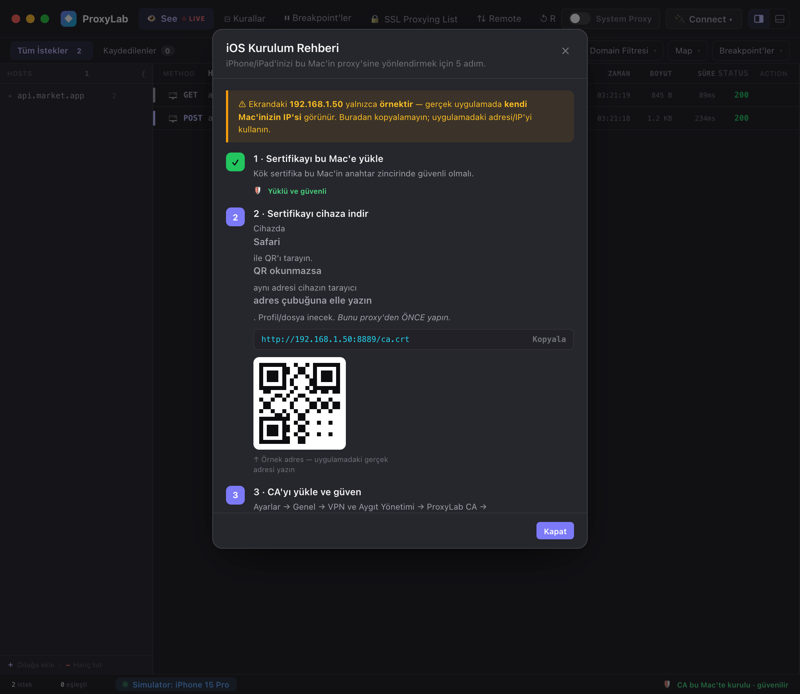
iOS Setup penceresi (Wi-Fi + CA adımları)
Pencerede yer alan adımlar
Adım 1 — Root sertifikayı bu Mac'e yükle: kuruluysa yeşil “Installed & Trusted”, değilse “Install to Mac” butonu.
Adım 2 — Sertifikayı cihaza indir: iPhone'da Safari ile penceredeki adresi açın (veya QR'ı tarayın). Safari profili indirmek için izin ister. (Bu adımı proxy'den ÖNCE yapın — cihaz henüz yönlendirilmediği için internet açıktır ve indirme sorunsuz olur.)
Adım 3 — Yükle & güven:
Ayarlar → Genel → VPN ve Aygıt Yönetimi → İndirilen Profil → ProxyLab CA → Yükle
Ayarlar → Genel → Hakkında → Sertifika Güveni Ayarları → ProxyLab CA anahtarını açın.
Adım 4 — iPhone'da Wi-Fi proxy'sini Otomatik (PAC) ayarla (EN SON):Ayarlar → Wi-Fi → (bağlı ağ ⓘ) → Proxy Yapılandır → Otomatik. URL alanına penceredeki Otomatik Proxy URL'ini girin (aşağıdaki tablo). Mac ve iPhone'daki tüm VPN'leri kapatın.
Alan
Değer
URL (PAC)
Penceredeki Otomatik Proxy URL'ini birebir kopyalayın — biçimi: http://<Mac-LAN-IP>:8889/proxy.pac
Kimlik Doğrulama
Kapalı (No)
IP'yi elle yazmayın — <Mac-LAN-IP> Mac'inizin yerel ağ adresidir ve her ağda değişir. Doğru değer her zaman ProxyLab penceresinde yazılıdır; oradan kopyalayın.
Neden en son? — Proxy'yi sertifika kurulmadan açarsanız (Adım 2-3'ten önce) cihaz proxy'ye yönlenir ama CA güvenilmediğinden HTTPS kırılır → sertifikayı bile indiremezsiniz. Sırayı koruyun: önce indir + güven, sonra proxy.
Neden Otomatik? — PAC sayesinde Kapsam (Focus) açıkken yalnız listenizdeki domain'ler ProxyLab'e girer; Instagram, WhatsApp gibi diğer tüm uygulamalar doğrudan internete çıkar ve etkilenmez. Manuel proxy'de ise TÜM trafik ProxyLab'den geçmek zorunda kalır ve pinned/QUIC kullanan uygulamalar kırılır.
Adım 4b — (yalnızca Otomatik çalışmazsa) Manuel proxy: Nadiren bazı iOS sürümleri/kurumsal profiller PAC URL'ini kabul etmez (proxy hiç devreye girmez). Bu durumda aynı ekranda Proxy Yapılandır → Manuel seçin ve penceredeki “Manuel proxy” bilgilerini girin:
Alan
Değer
Sunucu
Penceredeki Sunucu değeri — biçimi: <Mac-LAN-IP> (PAC'taki ile aynı IP)
Port
8888
Kimlik Doğrulama
Kapalı (No)
Manuel modun bedeli — Bu modda Kapsam'dan (Focus) bağımsız olarak telefonun TÜM trafiği ProxyLab'den geçer; focus dışı ve cert pinning yapan uygulamalar (Instagram, WhatsApp, bankalar) kırılabilir. Sadece Otomatik gerçekten çalışmıyorsa kullanın ve işiniz bitince proxy'yi Kapalı yapın.
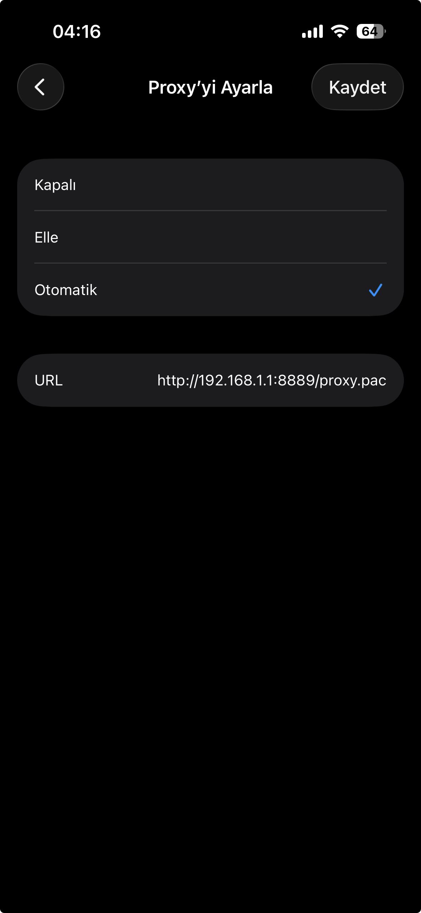
iPhone: Wi-Fi → Proxy Yapılandır → Otomatik (PAC URL)
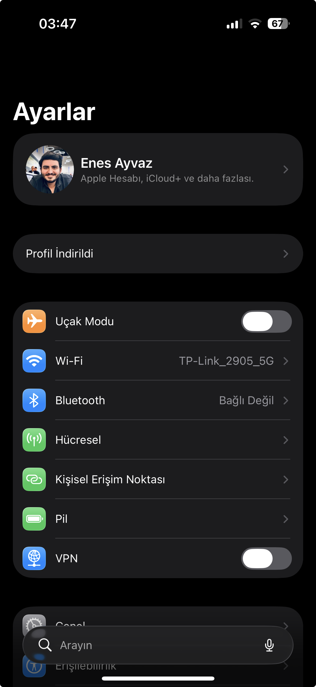
iPhone: Ayarlar üstünde “Profil İndirildi” satırı
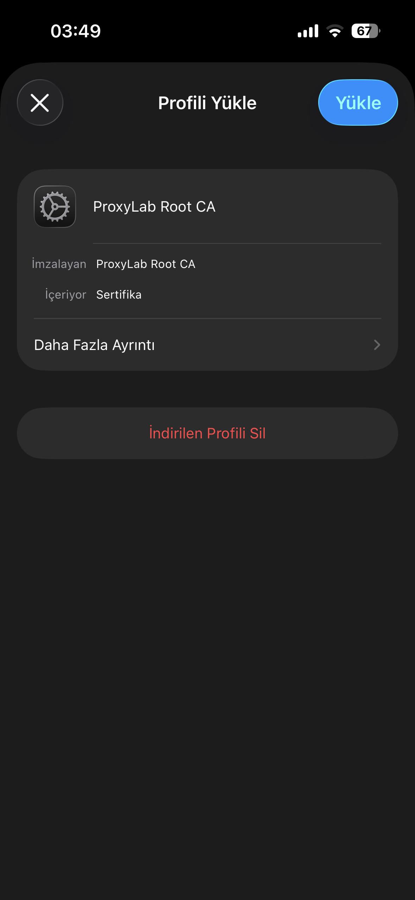
iPhone: Profili Yükle — ProxyLab Root CA
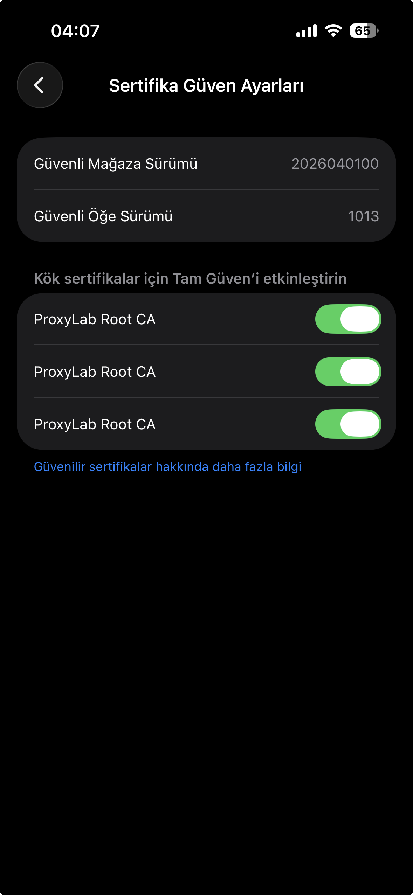
iPhone: Sertifika Güven Ayarları — ProxyLab Root CA açıkCihaz trafiği See sekmesinde
Not — Fiziksel cihaz Wi-Fi proxy'sine yönlendirildiği için bu akışta System Proxy'yi açmanıza gerek yoktur (Bölüm 7).
5Android — emülatör (adb)
Otomatik akış: ProxyLab adb ile çalışan emülatörü bulur, CA'yı yükler ve proxy'yi ayarlar — elle ayar gerekmez. Emülatör bu Mac'in üstünde çalıştığı için kablo/USB bağlantısına gerek yoktur; adb emülatörü otomatik görür.
Android Studio'da bir emülatör (AVD) başlatın — açık ve önyüklenmiş olsun.
Sağ üst Connect → “Android (Emulator / adb)”. Açılan Android Setup penceresinde çalışan emülatör görünür.
Emülatörü seçip CA yükle + proxy ayarla aksiyonlarını çalıştırın — adb her ikisini otomatik yapar.
İpucu — Emülatör görünmüyorsa: emülatörün tam önyüklenmesini bekleyin ve pencerede Yenile (Refresh)'e basın.
Connect → “Android (Emulator / adb)”
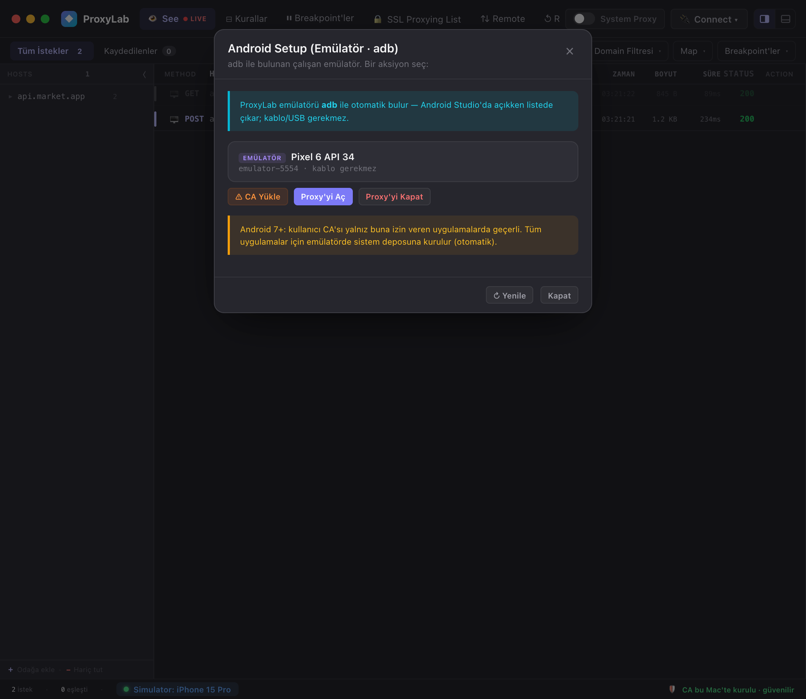
Android Setup penceresi — çalışan emülatörEmülatör trafiği See sekmesinde
Android 7+ uyarısı — Kullanıcı CA'sı yalnız buna izin veren uygulamalarda geçerlidir. Emülatörlerin çoğu (Google Play'siz “AOSP” imajları) root'a izin verdiği için sistem deposuna kurulum genelde emülatörde sorunsuzdur; böylece tüm uygulamalar CA'ya güvenir. Fiziksel Android cihaz için Bölüm 6'daki Wi-Fi akışını kullanın.
Adım 2 — Sertifikayı indir: Cihazda Chrome ile penceredeki adresi açın (veya QR). ca.crt dosyası iner. (Proxy'den ÖNCE — internet açıkken indirin.)
Adım 3 — Yükle & güven:Ayarlar → Güvenlik → Şifreleme ve kimlik bilgileri → Sertifika yükle → CA sertifikası → inen ca.crt'yi seçin.
Adım 4 — Android'de Wi-Fi proxy'sini Otomatik (PAC) ayarla (EN SON):Ayarlar → Wi-Fi → (ağa basılı tut) → Ağı değiştir → Gelişmiş → Proxy → Proxy Otomatik Yapılandırma. PAC URL = penceredeki Otomatik Proxy URL — biçimi: http://<Mac-LAN-IP>:8889/proxy.pac (IP'yi elle yazmayın; penceredeki değeri kopyalayın). Böylece Kapsam (Focus) dışı uygulamalar doğrudan geçer. Proxy'yi sertifika kurulmadan açarsanız HTTPS kırılır ve indirme yapamazsınız.
Adım 4b — (yalnızca Otomatik çalışmazsa) Manuel proxy: Aynı ekranda Proxy → Elle (Manual) seçin: Sunucu = penceredeki IP (<Mac-LAN-IP>), Port = 8888. Bu modda Focus'tan bağımsız olarak telefonun TÜM trafiği proxy'den geçer; focus dışı / pinned uygulamalar kırılabilir. İşiniz bitince proxy'yi kapatın.
📷 EKRAN GÖRÜNTÜSÜ (cihazdan): Ayarlar → Güvenlik → CA sertifikası yükleme
7System Proxy & Kapsam (Focus) — önemli uyarılar
En kritik nokta — System Proxy AÇIK iken bu Mac'in tüm HTTPS trafiği ProxyLab'den geçer. Cert pinning yapan uygulamalar (Claude Desktop, bankalar, bazı Apple servisleri) ProxyLab'in sertifikasını reddeder → o uygulamalar “request fail” verir / bağlanamaz. Bu bir hata değil, MITM'in doğal sonucudur.
Doğru kullanım
Sadece iPhone/simülatör debug ediyorsanız: System Proxy gerekli (simülatör Mac proxy'sini kullanır) — ama Kapsam (Focus) ile yalnız kendi backend domain'inizi yakalayın; gerisi doğrudan geçer ve pinned uygulamalar çalışmaya devam eder.
Sadece fiziksel iPhone Wi-Fi proxy ile bağlıysa: System Proxy'yi KAPALI bırakın (cihaz zaten yönlendirilmiştir).
Fiziksel cihazda Kapsam'ın çalışması için Otomatik (PAC) proxy şart — Telefonu Manuel proxy ile kurarsanız (Sunucu/Port), telefonun TÜM trafiği Focus'tan bağımsız olarak ProxyLab'e gider; focus dışı Instagram/WhatsApp gibi uygulamalar kırılır (“sayfa yüklenmiyor”). Focus dışı trafiğin gerçekten doğrudan geçmesi için cihazı Proxy Yapılandır → Otomatik + penceredeki PAC URL ile kurun (Bölüm 4/6). PAC, focus dışı host'ları DIRECT yönlendirir → o uygulamalar ProxyLab'i hiç görmez.
Kapsam (Focus) nasıl ayarlanır
Change → Kapsam (Scope) sekmesine geçin.
Focus moduna geçip yalnız kendi domain(ler)inizi ekleyin (örn. api.example.com).
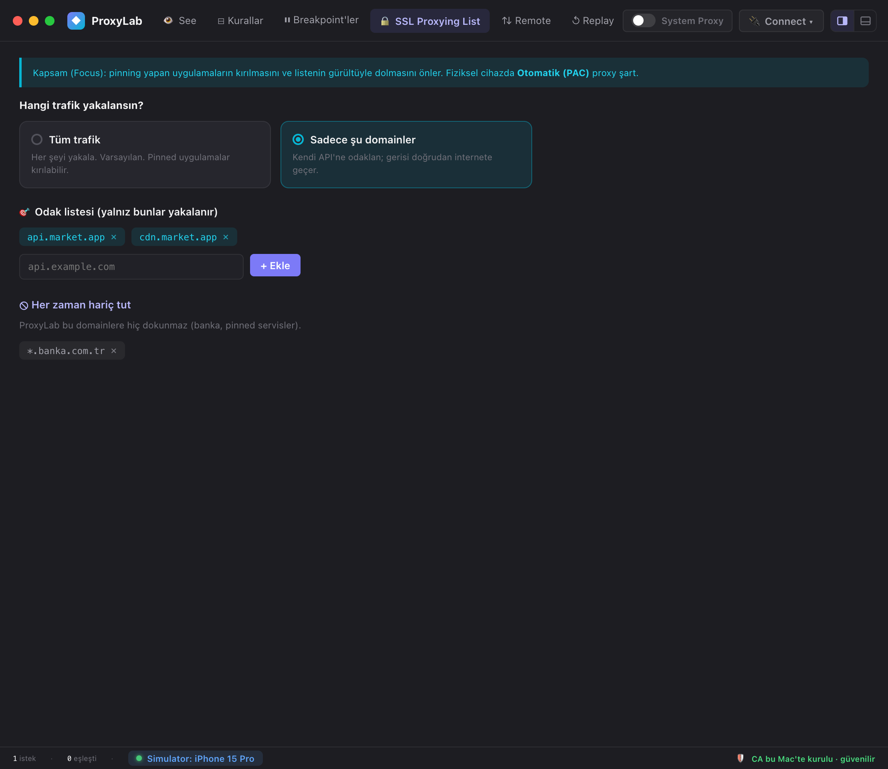
SSL Proxying List — Kapsam (Focus) ve domain listesiAraç çubuğunda System Proxy açık
Trafiği yakaladıktan sonra işin çoğu See sekmesinde başlar. Listede herhangi bir isteğe sağ tıklayın (trackpad'de iki parmak / Ctrl+tık) — bağlam menüsü açılır. Kural oluşturma ve breakpoint ekleme gibi adımlar için ayrı sekmeye gitmenize gerek yok; doğrudan buradan, o isteğin verisi ön doldurulmuş halde yapabilirsiniz.
Kayıtlara Ekle
Bundan Kural Oluştur
Remote Map'e Ekle
Breakpoint Ekle
JSON Viewer'da Aç
Diff A Olarak Ata
Diff B Olarak Ata
Renk Etiketi
· Temizle
api.example.com Sadece Bunu Yakala
api.example.com Bunu Hariç Tut
URL Kopyala
Request Body Kopyala
Response Body Kopyala
↑ See'de bir isteğe sağ tıklayınca açılan menü. Renkli nokta menünün uygulamadaki görünümüdür; her satır o isteğe uygulanır.
En çok kullanılan iki adım doğrudan buradan yapılır — ayrı sekmeye gitmeden, istek verisi otomatik dolu gelir.
Kural (mock) kaydını See'den oluşturur. Satırın method/URL/header/body'si önceden doldurulmuş bir kural editörü açılır — Change → Yanıt Kuralı sekmesine elle gidip baştan yazmanıza gerek kalmaz. Kaydedince bu istek artık sizin verdiğiniz yanıtla döner.
Breakpoint'i See'den ekler. O isteğin URL/host'una breakpoint tanımlanır; bir sonraki eşleşmede istek/yanıt uçuş sırasında durdurulur ve gönderilmeden önce düzenleyebilirsiniz. Breakpoints panelini ayrıca açıp kural yazmanıza gerek yok.
JSON Viewer'da Aç
Yanıt gövdesini Format sekmesindeki katlanabilir JSON görüntüleyicide açar.
Diff A / Diff B Olarak Ata
İki isteği karşılaştırmak için diff yuvalarına atar.
Renk Etiketi / Temizle
Satırı renkle işaretler (kalabalık listede gruplamak için) ya da etiketi kaldırır.
Sadece Bunu Yakala / Bunu Hariç Tut
İsteğin host'unu tek tıkla Kapsam (Focus) listesine ekler ya da hariç tutar (Bölüm 7).
Özet — Kural kaydetme ve breakpoint kaydetme sadece Change/Breakpoints sekmelerinden değil, See'de sağ tıklayarak da yapılır — ve bu yol daha hızlıdır çünkü istek verisi hazır gelir.
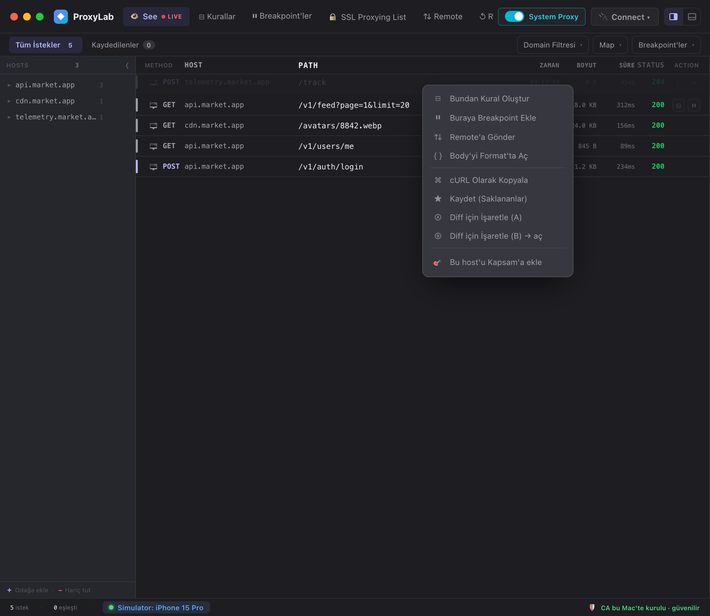
See’de bir isteğe sağ tık — bağlam menüsü
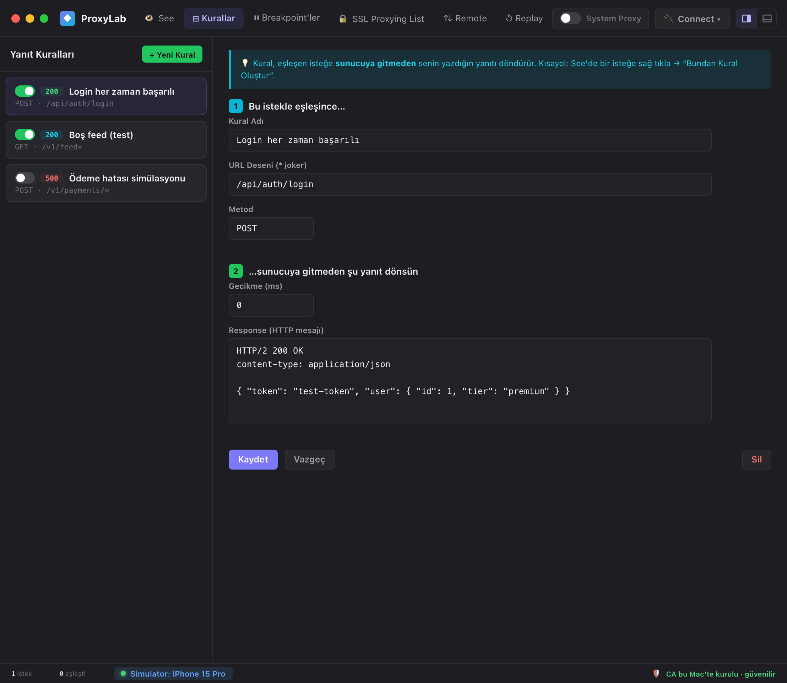
“Bundan Kural Oluştur” sonrası dolu kural editörü
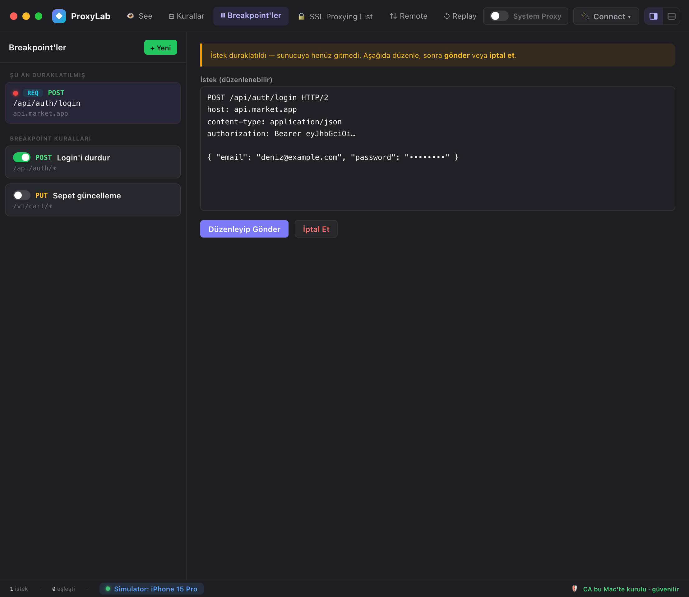
Breakpoint — duraklatılmış istek ve düzenleme
9Remote — İstek oluşturucu (request builder)
Remote sekmesi bir istek oluşturucudur: bir HTTP isteğini elle kurup (method, URL, header, body) doğrudan gönderir ve yanıtı gösterir — Postman/Insomnia'nın ProxyLab içine gömülmüş hali gibi düşünün.
Tipik kullanım
See'de gerçek bir isteğe sağ tıklayın → “Remote Map'e Ekle”. İsteğin method, URL, header'ları (cookie ve Authorization dahil) ve body'si Remote'a taşınır.
Remote sekmesinde istediğiniz alanı düzenleyin — örn. body'deki bir alanı değiştirin, bir query parametresi ekleyin.
Çalıştır (Run) ile gönderin (⌘/Ctrl+Enter); yanıt anında döner.
Neden işe yarar: cihazda yakaladığınız gerçek oturum bilgisiyle (auth), henüz uygulamaya eklenmemiş veya farklı parametreli bir uç noktayı cihaza dokunmadan deneyebilirsiniz.
Focus açık ama Instagram/WhatsApp vb. açılmıyor (fiziksel telefon)
Telefon Manuel proxy ile kurulmuş → focus dışı trafik de zorla ProxyLab'e gidiyor ve kırılıyor. Cihazı Proxy Yapılandır → Otomatik + penceredeki PAC URL ile yeniden kurun (Bölüm 4/6/7). Focus dışı uygulamalar DIRECT geçer ve normal çalışır.
Dahili logları görmek
⌘⇧L ile Ağ Log panelini açın; başlıkta proxy'nin dinlediği adres ve TLS hataları görünür.
📷 EKRAN GÖRÜNTÜSÜ: Ağ Log paneli (⌘⇧L) — başlıkta “127.0.0.1:8888 · LAN …”
11Klavye kısayolları
Kısayol
İşlev
⌘1 / ⌘2 / ⌘3 / ⌘4
See / Change / Replay / Format sekmeleri (üst menü: View)